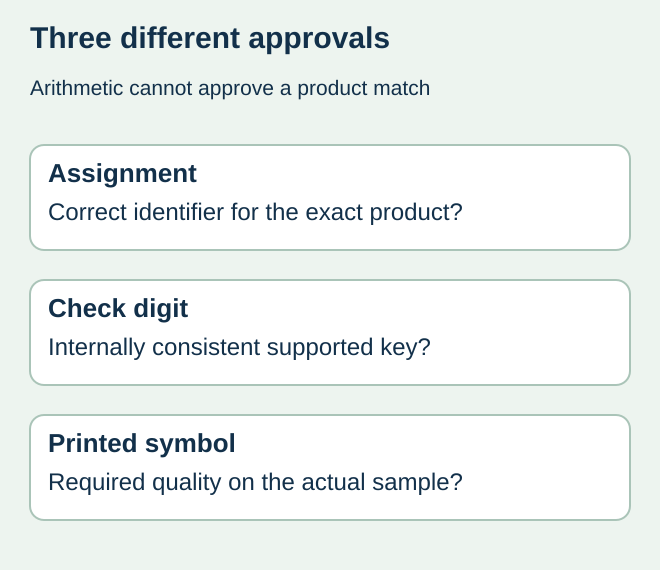
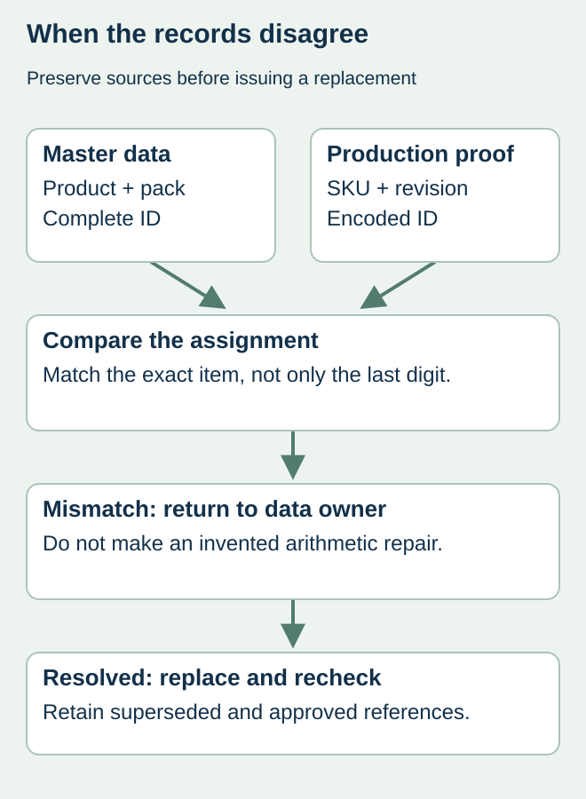

A buyer checks the last digit of a proposed barcode number and gets a valid result. The label still might identify a different flavor, pack size or packaging level. Arithmetic can be correct while the product assignment is wrong. This matters when similar food SKUs share a design and the barcode is copied with the artwork.
Approve the identifier against the authorized product record first, verify its check digit where applicable, and review the printed symbol separately. Keep each result attached to the exact artwork. None of those checks should silently stand in for the others.


Ask what the calculator actually establishes
The official GS1 check-digit calculator calculates the final check digit for supported GS1 identification keys. That is an arithmetic service. Using it does not assign a number to your company, establish permission to use it or confirm that it represents the item on the current proof.
If the supplied number fails its expected check, return to the authorized source. Do not repair the final digit on instinct and send the modified number to print. The preceding characters could be the part that was copied incorrectly. A newly calculated ending can make that wrong string look internally consistent.
Use an identifier approval card
| Record | Evidence to retain | Approver question |
|---|---|---|
| Product identity | SKU, variant, net quantity and packaging level | Is this the item being ordered? |
| Assignment | Authorized master-data record and owner | Does this complete identifier belong to this item? |
| Arithmetic | Supported key type and check result | Does the string pass its applicable check? |
| Artwork | Exact production file and visible/encoded value | Did this authorized string reach the correct component? |
| Physical output | Identified sample and required verification | Does the printed symbol meet its agreed requirements? |
A product name alone is a weak matching key. Two items can share most of a name while differing in flavor or count. Ask the master-data owner which attributes distinguish the actual item and include those in the approval record. A printer should receive the approved value rather than infer it from a neighboring design.


Resolve a disagreement at its source
Imagine a fictional snack range in which the larger bag receives the smaller bag’s complete, arithmetically valid number. Recalculating its last digit adds no useful evidence. Comparing the proof with the two authorized product records exposes the assignment conflict. The owner must determine the correct record before the designer replaces the output.
If the spreadsheet, proof and receiving partner disagree, preserve all three references and identify the responsible data owner. Do not choose the version that scans fastest or appears on the most recent email. Record the controlled replacement and which earlier file it supersedes. The data-file integrity guide explains why a displayed value and the actual exported character string also need comparison.
Close the right release questions
After the authorized value is confirmed, compare the encoded data and any human-readable presentation according to the applicable symbol rules. Have the relevant owner resolve formatting differences rather than mechanically forcing every displayed character to look identical. Code generation and the final receiving use need their own agreement.
Printed verification then addresses the actual symbol under a stated method; a check digit does not grade contrast, dimensions or quiet zones. Keep an identified proof, sample and approval record. When a product changes, obtain a fresh identifier decision where needed instead of assuming the previous assignment remains valid.
Discuss the unresolved label requirement
Provide the product and pack-level references, authorized identifier source, artwork revision and the mismatch you need to resolve. A redacted example is enough for an initial discussion. Prepare a label specification inquiry. The contact page opens an email draft and lists email or WhatsApp for attachments. Supply, proof options, testing, pricing and timing require project confirmation.